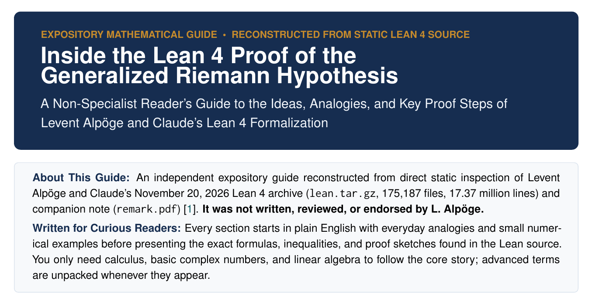

In November 2026, the mathematician Levent Alpöge, who now works at Anthropic, announced that working with Claude he had found a proof of the Riemann Hypothesis, and that the same method resolves the Generalized Riemann Hypothesis for Dirichlet L-functions. In a short companion note, he describes steering the work toward a descendant of Stepanov's argument for curves over finite fields, while Claude supplied much of the technical machinery, including the idea of chaining roughly √X theta lifts to imitate the "multiplicity" that the function-field proof relies on. Rather than post what he called a massive unreadable document, he released only the formal proof: a Lean 4 archive of 175,187 files and 17.37 million lines.
That left those of us who are curious with a proof no human can read. So I downloaded the archive and the note and asked Google's Antigravity agent, running Gemini Neon, to read the Lean source and explain it. The result is the 43-page guide below. It reconstructs the argument's architecture from static inspection of the code, starting each section in plain English with analogies and small worked examples before giving the exact statements and inequalities found in the Lean files. It was not written, reviewed or endorsed by Alpöge.

Read the guide (PDF, 43 pages)
The guide has been triple checked by AIs (Gemini Neon High x 2, Claude Opus High) for rigor and correctness.
Comments